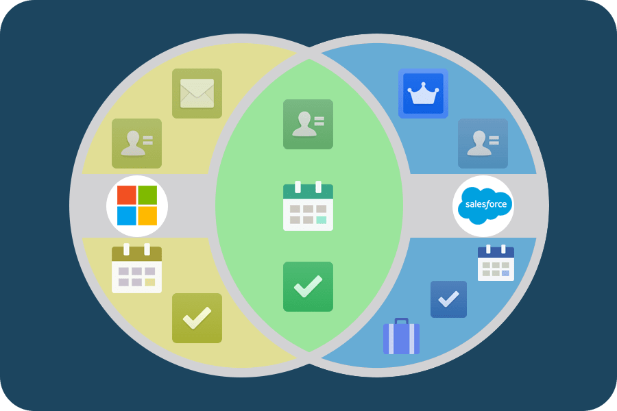

Keep Records up-to-date. Bring Email and Salesforce together. Focus on Selling not on Data Entry
Manage Salesforce tasks in Outlook. Moving Opportunities forward.
Review the Salesforce records related to an email or an appointment.
Make updates to the records without leaving your Outlook inbox
Add records to capture new Opportunities and Leads, Events, Tasks, Contact, Case
Email logged in o the selected records in Salesforce
Use email template to compose faster with consistent messaging
Track your email with Email Tracking - Include links to track in the email - Know when the customer has read the email and know when to do the follow-up
Sent Later feature: Write the email when it is convenient to you and sent to at later time when it will have high impact
Lighting Sync for Exchange: Syncs contacts and events between your Microsoft Exchange-based calendar and Salesforce
Lighting Sync for Google: Lightning Sync for Google can sync contacts and events between your G Suite account and Salesforce
Lightning for Outlook System Requirements
Email Server: either
Exchange 2016 or 2013 on-premises
Exchange Online with Office 365
Email Client App: either
Outlook on the web
Microsoft® Outlook® 2016 or 2013 on Windows PC, most recent stable version recommended : see Outlook requirements
Microsoft Outlook for Mac 2016, Mac OS X 10.10 or later with AppleWebKit 600 or later
For the best experience, ensure that Use Cache Mode in the Outlook Account Settings is turned on.
Browser:
Google Chrome most recent stable version
Mozilla Firefox most recent stable version
Apple® Safari® 10 or later, most recent stable version recommended
Microsoft Internet Explorer® 11 (Windows only)
Microsoft Edge, most recent stable version (Windows only)
If you’re using Lightning for Outlook or Inbox Beta for Outlook in
a desktop version of Outlook, Microsoft Internet Explorer 11 is required on the desktop computer.
However, you’re not required to use Internet Explorer as your default browser.
More info
How to Install Lightning for Outlook
Lightning Sync for Exchange Requirements
Email Server: either
Exchange 2016 or 2013 on-premises
Exchange Online with Office 365
Email Client App: either
Outlook on the web
Microsoft® Outlook® 2016 or 2013 on Windows PC, most recent stable version recommended
Browser:
Google Chrome most recent stable version
Mozilla Firefox most recent stable version
Apple® Safari® 10 or later, most recent stable version recommended
Microsoft Internet Explorer® 11 (Windows only)
Microsoft Edge, most recent stable version (Windows only)
Set Up a Microsoft Exchange Service Account to Sync with Salesforce (Office 365 Admin Center)
Set Up a Microsoft Exchange Service Account to Sync with Salesforce (Using Command Shell)
Lightning Sync doc
Outlook and Email Integrations - Release Readiness Live Winter '18
A Way to Increase Your Sales Reps’ Productivity
Use case: Your reps use Microsoft Outlook & Salesforce.
Sales reps spend up to 28% of their day in email and calendars.
The contacts in Outlook serve as your reps’ virtual Rolodex card file.
Reps rely heavily on their calendars for planning their days and scheduling important events.
Important: Bring Salesforce data to the place where they spend so much of their time
to help your reps spend less time entering data and toggling between the two systems
and track important email conversations relevant to Salesforce records.
This will help to craft targeted, meaningful email communications to prospects and customers.
Reps use of Salesforce
Maintain leads and contacts: relate leads and contacts to other important Salesforce records,
such as accounts and opportunities.
Schedule meetings and appointments:
Sales reps and their managers rely on the Salesforce calendar
to get sales-related meetings and appointments on the books.
Your reps also relate these events to other important Salesforce records.
Track deals in the pipeline:
Sales folks track their deals using Salesforce opportunities,
which your sales teams relate to other important Salesforce records.
Learn about outstanding cases:
of issues that their customers log with your company. Knowing about issues
is especially important before your reps try selling .
Venn Diagram - Outlook and Salesforce

Lightning for Outlook and Lightning Sync
See and relate relevant Salesforce content in Outlook:
From Outlook email Client, your reps get context into what’s happening with the people they sell to.
And most important:
Reps add email that’s relevant to the sales cycle, so that colleagues in Salesforce know what’s going on.
You play the important role of increasing Salesforce adoption among your sales team.
Create Salesforce records, such as leads, opportunities,
accounts, contacts, and even records based on custom objects.
Relate email messages and nonrecurring calendar events to multiple Salesforce contacts
and to any other Salesforce record that accepts tasks or email messages.
Sync contacts and events:
Using Lightning Sync in the background,
your reps don’t duplicate data entry for things such as contacts and events in both Outlook and Salesforce.
Contacts: Depending on the options you choose, contacts sync
in either or both directions between Salesforce and your Exchange server.
Events: Nonrecurring events sync from your Exchange server to Salesforce. Or for sales reps who meet certain requirements,
nonrecurring events can sync in both directions.
Salesforce for Outlook to Lightning for Outlook
Locally installed Outlook integration product to cloud-based Outlook integration
Lightning for Outlook is available to your reps on locally installed versions of Outlook
and on Outlook on the web
Lightning for Outlook now supports Mac
Whenever we update Lightning for Outlook, those updates occur on the Salesforce side of business.
It’s much like the automatic Salesforce updates you get three times a year.
Lightning for Outlook System Requirements
Email server:
Exchange 2016 or 2013 on-premises OR
Exchange Online with Office 365
Email application :
Outlook on the web OR
Desktop version of Microsoft Outlook® 2016 or 2013 on Windows PC OR
Microsoft Outlook for Mac 2016
Browser (allow cookies from Salesforce): Chrome or Firefox or Safari or IE 11 or MS Edge
Lightning Sync System Requirements
To Connect to Salesforce Using
Your Company Needs Either
With These Settings Enabled
Email server
Office 365® Enterprise Editions with Exchange Online
Exchange Server 2016
Exchange Server 2013 Service Pack 1
Exchange Web Services (EWS) on an SSL connection
Exchange Autodiscover Service
Basic authentication on your Exchange server and your Autodiscover
service
Encryption protocol TLS 1.1 or later
OAuth 2.0 for Exchange
Office 365® Enterprise Editions with Exchange Online
Nothing else
Salesforce for Outlook to Lightning for Outlook - Demo
Salesforce Inbox is a suite of applications that brings together two platforms you use every day: your email and Salesforce. Salesforce Inbox is an add-on product for Sales Cloud, Service Cloud, and Force.com. Try it today on Gmail, Outlook, Android, and iOS mobile applications!
Video: Salesforce Inbox
Microsoft add-in framework
Outlook add-ins : Salesforce integration with Outlook is built on this
Outlook add-ins are integrations built by third parties into Outlook by using our web-based platform.
Consist of a manifest, which describes how the add-in integrates into Outlook (for example, a button or a task pane), and JavaScript/HTML code, which makes up the UI and business logic of the add-in.
Can be acquired from AppSource or sideloaded by end-users or administrators.
Do not have any code physically installed on the user's device or Outlook client. F
Outlook reads the manifest and hooks up the specified controls in the UI, and then loads the JavaScript and HTML. The web components all run in the context of a browser in a sandbox.
The Outlook items that support add-ins include email messages, meeting requests, responses and cancellations, and appointments.
Outlook add-ins are supported in Outlook 2013 or later on Windows, Outlook 2016 or later on Mac
Outlook add-in features
Supported: messages or appointments while composing or reading
Unsupported: Outlook does not activate add-ins if the current message item, in a compose or read form, is one of the following:
In a shared mailbox, in another user's mailbox, in an archive mailbox, or in a public folder.
Protected by Information Rights Management (IRM) or encrypted in other ways for protection. A digitally signed message is an example since digital signing relies on one of these mechanisms.
A delivery report or notification that has the message class IPM.Report.*, including delivery and Non-Delivery Report (NDR) reports, and read, non-read, and delay notifications.
A draft (does not have a sender assigned to it), or in the Outlook Drafts folder.
A .msg or .eml file which is an attachment to another message.